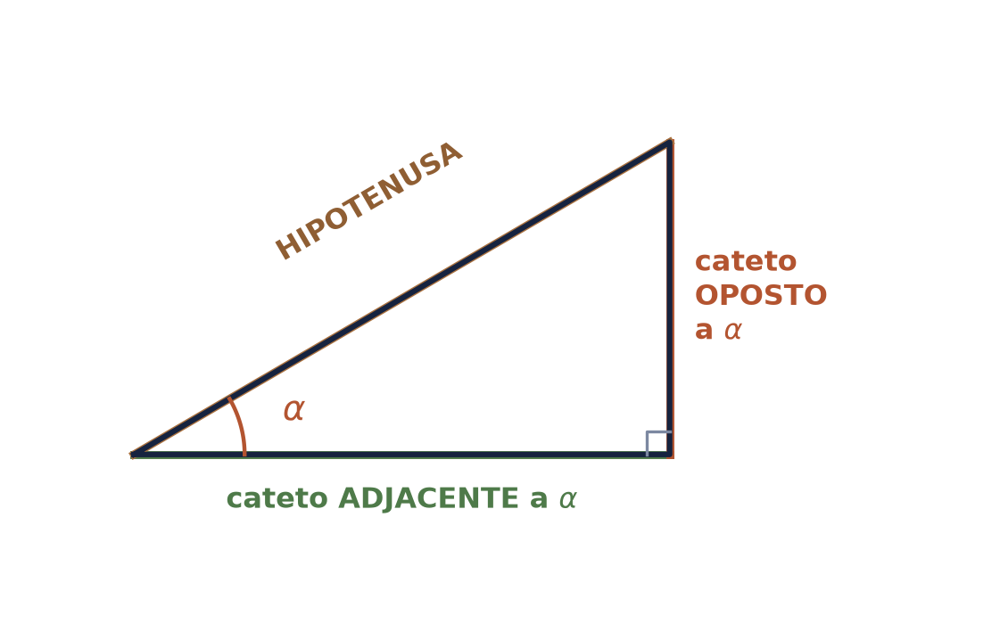
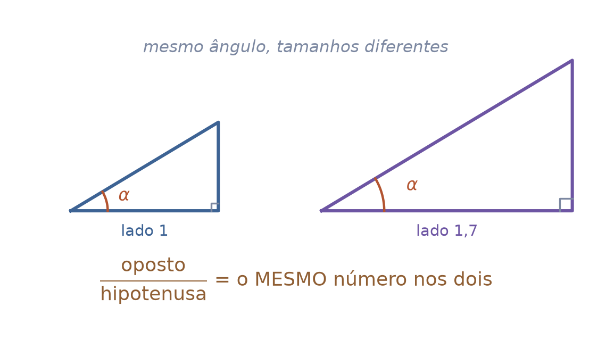
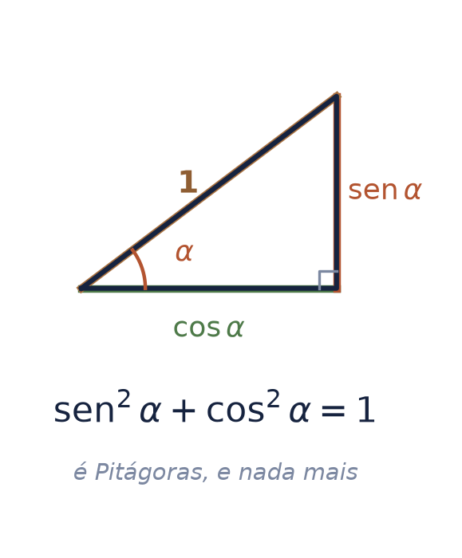
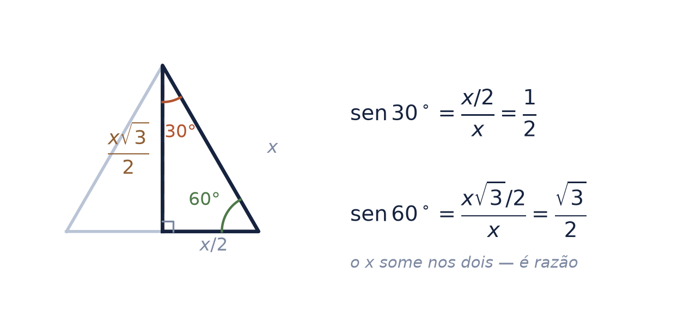
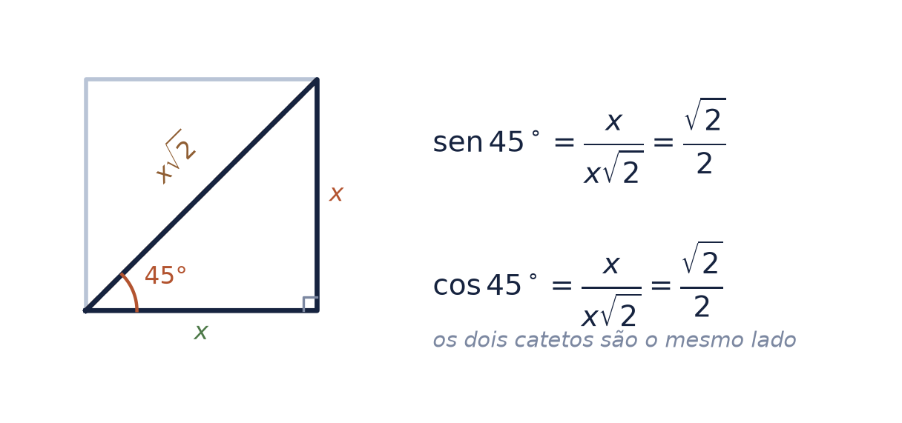
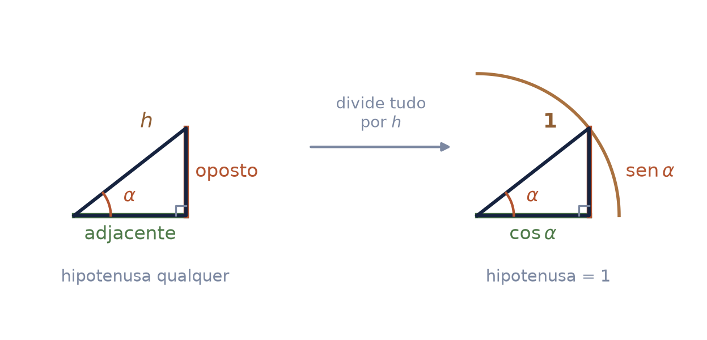
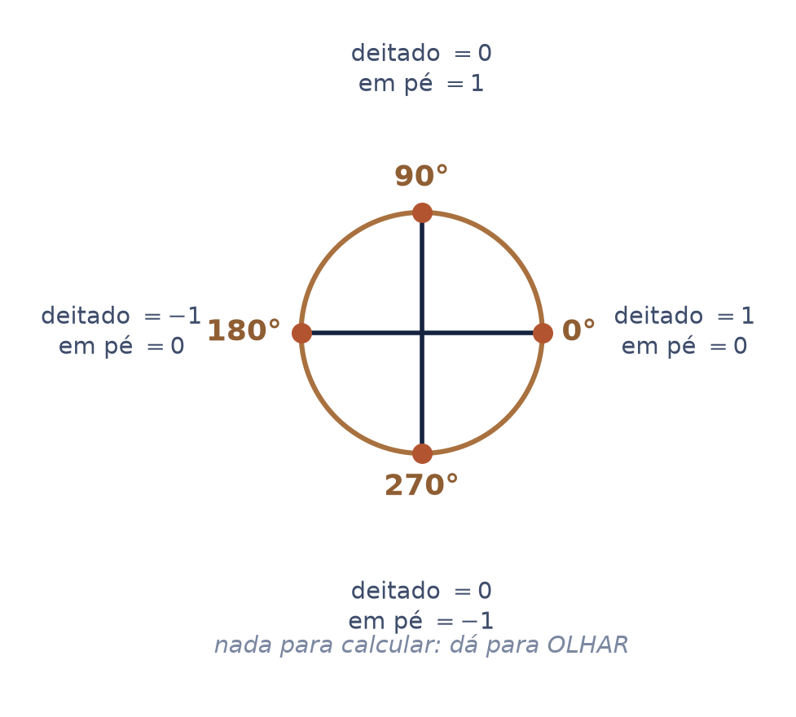
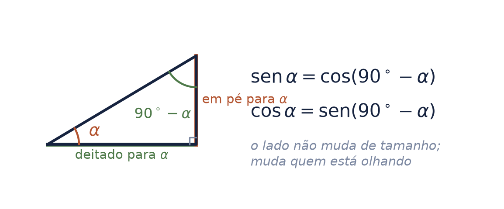
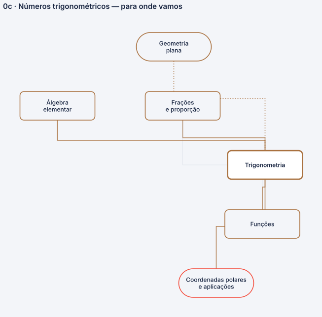

seno, cosseno e tangente não são botões — são números
Este seminário não pertence ao arco do cálculo nem ao arco GAAL. Ele é anterior aos dois, como o mapa de pré-requisitos diz: a trigonometria mora na geometria plana, que é a figura antes da coordenada.
Ele existe por uma dívida medida. Nos nove seminários da série, seno, cosseno, tangente e círculo de raio 1 aparecem 82 vezes — 45 só em Ler um gráfico — e nenhum deles ensina o que essas palavras querem dizer.
Autor · Mateus Felipe Alkimim Pereira
Coautora · Sara Catiele Nogueira Pereira
Orientador · Rosivaldo Antônio Gohnan
| \(\alpha\) | letra grega — um ângulo. Lê-se "alfa". Nunca é o assunto: é a medida dele |
| \(30^\circ\) | a bolinha alta é grau. Lê-se "trinta graus". De onde vem o grau, e por que 360, está no seminário anterior |
| sen, cos, tg | letra em pé — o nome da razão. Lê-se "seno", "cosseno", "tangente" |
| \(\operatorname{sen}30^\circ\) | o nome aplicado a um ângulo. Isto já não é um nome: é um número, e vale \(1/2\) |
a diferença da terceira linha para a quarta é a folha inteira que vem a seguir. sen é o nome; sen 30° é um número.
| \(\sqrt{2}\), \(\sqrt{3}\) | a raiz quadrada. Lê-se "raiz de dois". Aparecem porque saem de Pitágoras, não por gosto |
| \(\dfrac{a}{b}\) | uma razão: quantas vezes \(b\) cabe em \(a\). É o objeto central deste seminário |
De triângulo e razão, e de mais nada. Não usa plano cartesiano, não usa par ordenado, não usa função — essas três chegam depois, em Ler um gráfico.
Um triângulo retângulo tem um ângulo de \(90^\circ\). O lado oposto ao ângulo reto é a hipotenusa — é sempre o maior, e o nome dele não depende de mais nada.
Os outros dois são os catetos, e aqui está o detalhe que confunde todo mundo: o nome deles depende de qual ângulo você está olhando.
| oposto | o cateto que está do outro lado de \(\alpha\) — não encosta nele |
| adjacente | o cateto que forma o ângulo \(\alpha\) junto com a hipotenusa |
troque de ângulo e os dois catetos trocam de nome. O triângulo não mudou; mudou quem está olhando.

Desenhe o mesmo ângulo \(\alpha\) em dois triângulos de tamanhos diferentes. Os lados mudam. A razão entre dois deles, não.
seno de alfa é igual a oposto sobre hipotenusa
Isso é o que a semelhança de triângulos garante: dobre a figura, e o numerador e o denominador dobram juntos. A divisão apaga a escala.
"Vou colocar os números trigonométricos. Porque na verdade eles são números. São números — e eles estão definidos através de quem? De ângulos."

Tome o triângulo com hipotenusa 1. Pela definição de cima, o cateto oposto passa a valer exatamente \(\operatorname{sen}\alpha\), e o adjacente, \(\cos\alpha\) — porque dividir por \(1\) não muda nada.
Agora escreva Pitágoras nesse triângulo:
seno ao quadrado de alfa mais cosseno ao quadrado de alfa é igual a um
a identidade mais usada da trigonometria não é uma fórmula nova. É Pitágoras, num triângulo de hipotenusa 1. Não há o que decorar.

Os valores de \(30^\circ\) e \(60^\circ\) costumam chegar como tabela para decorar. Eles saem de uma figura: um triângulo equilátero de lado \(x\), cortado ao meio pela altura.
O corte produz um triângulo retângulo com ângulos \(30^\circ\), \(60^\circ\) e \(90^\circ\). A base virou \(x/2\); a hipotenusa continua \(x\); e a altura, por Pitágoras, é \(\dfrac{x\sqrt{3}}{2}\).
repare no que acontece com o \(x\): ele aparece em cima e embaixo das duas contas, e some. Sobra um número puro. É a tese da folha 4 acontecendo na sua frente.
\(\cos 30^\circ=\dfrac{\sqrt{3}}{2}\) · \(\cos 60^\circ=\dfrac{1}{2}\) · \(\operatorname{tg}30^\circ=\dfrac{\sqrt{3}}{3}\) · \(\operatorname{tg}60^\circ=\sqrt{3}\)

Mesmo método, outra figura: um quadrado de lado \(x\), cortado pela diagonal. Os dois ângulos que sobram são iguais, e valem \(45^\circ\) cada.
Aqui os dois catetos são o mesmo lado do quadrado. Como seno e cosseno se distinguem só por qual cateto vai em cima, e os dois são iguais:
a tangente valer exatamente 1 não é coincidência bonita: é a razão de um lado por ele mesmo.

Pegue qualquer triângulo retângulo e divida os três lados pela hipotenusa. O ângulo não muda — a razão é que manda, e ela não vê escala.
O que muda é o que você pode ler na figura: com a hipotenusa valendo \(1\), o cateto oposto é \(\operatorname{sen}\alpha\) e o adjacente é \(\cos\alpha\). Deixaram de ser contas a fazer e viraram comprimentos para olhar.
Gire esse triângulo em torno do vértice de \(\alpha\), mantendo a hipotenusa em \(1\), e a ponta dele descreve um círculo de raio 1.
o círculo não é um assunto novo. É o mesmo triângulo, com a hipotenusa travada em 1, visto em todas as posições ao mesmo tempo.

Em quatro posições do círculo o triângulo desaparece: um dos catetos encolhe até zero e o outro fica do tamanho do raio. Não sobra o que calcular — sobra o que ver.
| \(0^\circ\) | deitado \(=1\), em pé \(=0\) |
| \(90^\circ\) | deitado \(=0\), em pé \(=1\) |
| \(180^\circ\) | deitado \(=-1\), em pé \(=0\) |
| \(270^\circ\) | deitado \(=0\), em pé \(=-1\) |
O sinal é a única novidade, e ele não vem de conta: vem de para que lado o comprimento aponta a partir do centro.
"deitado" é o cosseno e "em pé" é o seno. Os nomes de sempre voltam na folha seguinte; aqui o que importa é que dá para olhar e dizer.

Num triângulo retângulo, os dois ângulos que não são o reto somam \(90^\circ\). Se um é \(\alpha\), o outro é \(90^\circ-\alpha\). Eles são chamados complementares.
Agora repare: o cateto que é oposto a \(\alpha\) é o mesmo que é adjacente a \(90^\circ-\alpha\). O lado não mudou de tamanho — mudou de nome, porque mudou quem olha.
é por isso que \(\operatorname{sen}30^\circ\) e \(\cos60^\circ\) dão o mesmo número, e \(\operatorname{sen}60^\circ\) e \(\cos30^\circ\) também. Meia tabela é a outra metade de cabeça para baixo.

Você tem agora o círculo de raio \(1\) com os comprimentos em cima dele, e os valores notáveis saindo de duas figuras. É o suficiente para o próximo passo — e o próximo passo não é aqui.
| fica aqui | o triângulo, a razão, os notáveis, o círculo de raio 1, o sinal |
| é do Ler um gráfico | o par ordenado e o plano cartesiano; o círculo desenrolado virando a onda do seno; a tangente como comprimento na reta vertical |
A separação não é organizacional, é de matéria: o plano cartesiano é coordenada, e a trigonometria é figura. O mapa de pré-requisitos separa os dois — a geometria plana é "a figura antes da coordenada".
C1 · Ler um gráfico abre o plano cartesiano na folha 4 e volta ao círculo na 10, agora com quatro comprimentos e o desenrolamento. Ele foi escrito antes deste seminário e supunha tudo o que você acabou de ver.
se você chegou aqui pelo arco do cálculo e achou que a trigonometria tinha aparecido do nada, não era impressão: tinha mesmo. Este seminário existe para isso não acontecer de novo.
A trigonometria não é um nó solto: o mapa a alimenta por três caminhos — a geometria plana, que dá a figura; as frações, porque razão é fração; e a álgebra elementar, que dá a letra.
E ela paga em dois: as funções, quando o seno deixa de ser projeção e vira função de uma variável, e as coordenadas polares, onde o ângulo vira endereço.
o mesmo nó é dividido com o seminário 6. Este dá a razão e os notáveis; aquele dá a estrutura do círculo povoado.

| a tese | "são números, e estão definidos através de ângulos" — aula particular do Prof. Rosivaldo, 30/08/2026, minuto 0,2 e minuto 28,7 |
| os notáveis | as deduções de \(\operatorname{sen}30^\circ\) e \(\operatorname{sen}60^\circ\), e as caixas de \(\cos30^\circ\) e \(\cos60^\circ\): fotografadas do quadro dele, na mesma aula |
| os complementares | mesma aula, minutos 23,9 a 29,2 |
| a posição no mapa | math-prerequisite-map:
trigonometria é anterior aos dois troncos e
"mora na geometria plana" |
Nenhuma folha aqui trata do radiano, das funções trigonométricas como funções, das identidades de soma de arcos, nem da lei dos senos e dos cossenos. São assuntos verdadeiros e ausentes de propósito: a dívida medida era outra.
o radiano aparece em Ler um gráfico, folha 10, junto com o arco. É lá que ele é preciso.